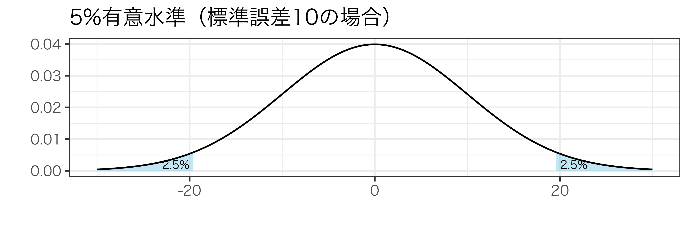
09/統計的仮説検定：発展編
現代政治分析入門2
2026-11-24
出席登録をお願いします
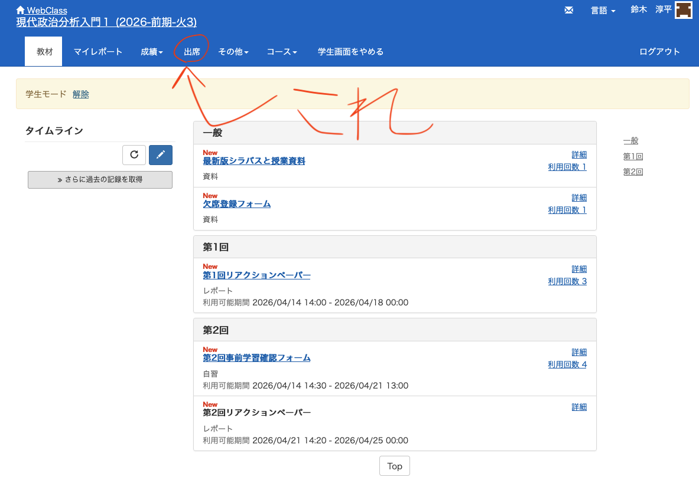
今日の目次
- はじめに
- 復習：統計的仮説検定
- 検出力
- 信頼区間
- 仮説検定の限界
- まとめ
はじめに
本日の目的と到達目標
目的
統計的仮説検定について深掘りする。まず仮説検定の枠組みを復習した後、検出力という概念を紹介し、その重要性や第1種／第2種との過誤との関係を議論する。次に、仮説検定から派生した信頼区間という概念を紹介し、実際の分析結果から信頼区間を計算してみる。さらに仮説検定の枠組みの限界を議論する。
到達目標
- 検出力とは何かを説明できる。
- 真の値とサンプルサイズが検出力にどのような影響を与えるのかを説明できる。
- 信頼区間とは何かを説明できる。
- 実際の分析結果から信頼区間を計算できる。
- 仮説検定の4つの限界を説明できる。
本日の授業の位置付け

小テストの講評
TBD
復習：統計的仮説検定
統計的仮説検定
モデル\(Y_{i}=\beta_{0}+\beta_{1}X_{i}+\varepsilon_{i}\)の推定結果\(\hat{\beta}_{1}\)から、\(X\)は本当に効果があると言えるか？
- 帰無仮説を定める（\(H_{0}: \beta_{1}=0\)）
- 対立仮説を定める（\(H_{A}: \beta_{1}\ne0\)）
- 帰無仮説が正しいと仮定したときに、推定された\(\hat{\beta}_{1}\)がどれほど出やすいか／出にくいかを考える
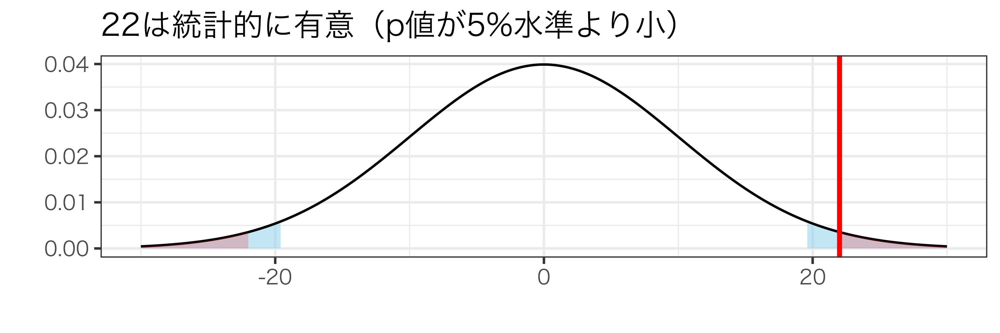
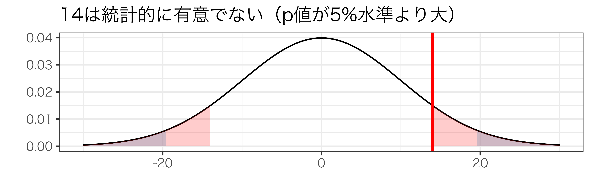
t検定
\(t\)値\(\frac{\hat{\beta}_{1}}{\operatorname{se}(\hat{\beta}_{1})}\)を計算し、\(t\)分布上でどれほど出やすいか／出にくいか
- サンプルサイズが十分大きければ、t分布は標準正規分布1に近似
- \(|\frac{\hat{\beta}_{1}}{\operatorname{se}(\hat{\beta}_{1})}|>1.96\)→5%水準で有意
- \(|\frac{\hat{\beta}_{1}}{\operatorname{se}(\hat{\beta}_{1})}|<1.96\)→5%水準で有意でない
検出力
復習：第1種／第2種の過誤
第1種の過誤 (Type I Error)
帰無仮説が正しいのに棄却してしまうこと（偽陽性）
- \(H_{0}:\beta_{1}=0\)が正しいのに\(H_{A}:\beta_{1}\ne0\)と判断
第2種の過誤 (Type II Error)
帰無仮説が誤っているのに棄却しないこと（偽陰性）
- \(H_{A}:\beta_{1}\ne0\)が正しいのに\(H_{0}:\beta_{1}=0\)と判断
第1種の過誤と第2種の過誤の間にはトレードオフがある
- 第1種の過誤の確率\(\alpha\)1を減らそうとすると第2種の過誤を犯す確率が増える
検出力（power）
観察されたデータが、誤っている帰無仮説をきちんと棄却できる力
- 第2種の過誤を犯す確率を\(\gamma\)として検出力は\(1-\gamma\)
検出力が低いと色々な問題が発生
- 例：新薬
- 新薬に本当は効果があるのに効果がないと判断→社会的に損失
- 例：コロナとPCR検査
- 本当は感染している人を感染していないと判断→出歩いて感染拡大
検出力に影響するのは真値の絶対値とサンプルサイズ
異なる真値と検出力
標準誤差1、有意水準5%の片側仮説検定を考える（臨界値は1.64）
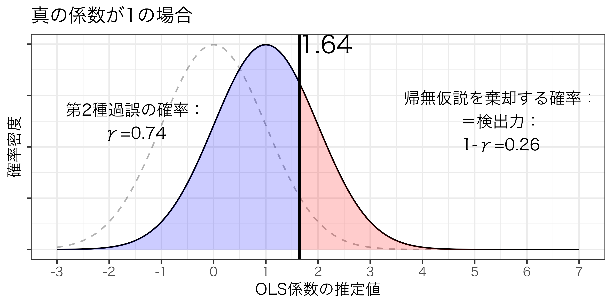
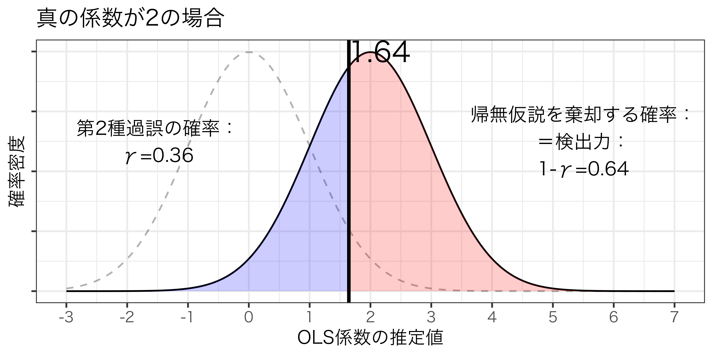
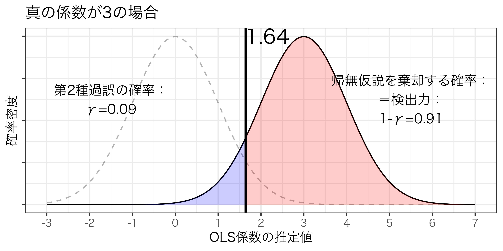
真の係数の絶対値が大きいほど検出力は高くなる
サンプルサイズと検出力
真の係数2、有意水準5%の片側仮説検定を考える
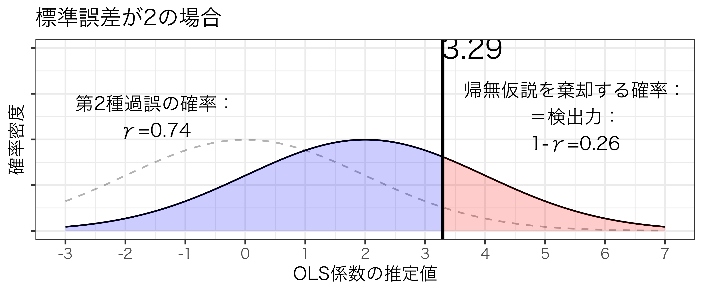
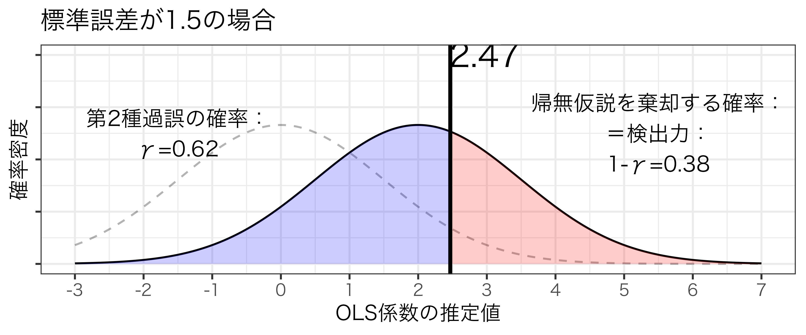
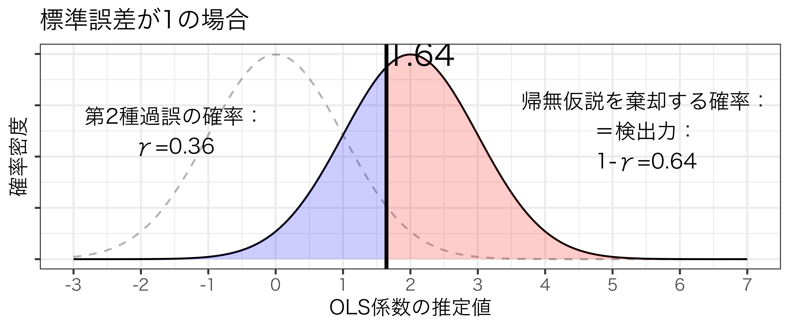
標準誤差が小さくなるほど検出力は高まる
- サンプルサイズが大きくなるほど検出力は高まる
検出力の意義
有意でない結果が出た時に検出力を考える必要
- 例：身長と賃金
- \(\hat{\beta}_{1}=20\)、標準誤差20
- 身長1cm伸びるごとに時給が20円上がるが、統計的に有意でない
- 真の値が小さすぎるのかもしれない
- 身長1cm伸びるごとに時給は0円上がる（効果がない）のかもしれない
- サンプルサイズが小さい結果標準誤差が大きいのかもしれない
- データが10人そこらだったら…
- \(\hat{\beta}_{1}=20\)、標準誤差20
信頼区間
信頼区間
OLS推定の結果、\(\hat{\beta}_{1}=0.41\)、標準誤差0.1になったが、真の値\(\beta_{1}\)はどれくらいになりそうか？
信頼区間 (confidence interval: CI)
観察された係数の推定値が真値と矛盾しない範囲
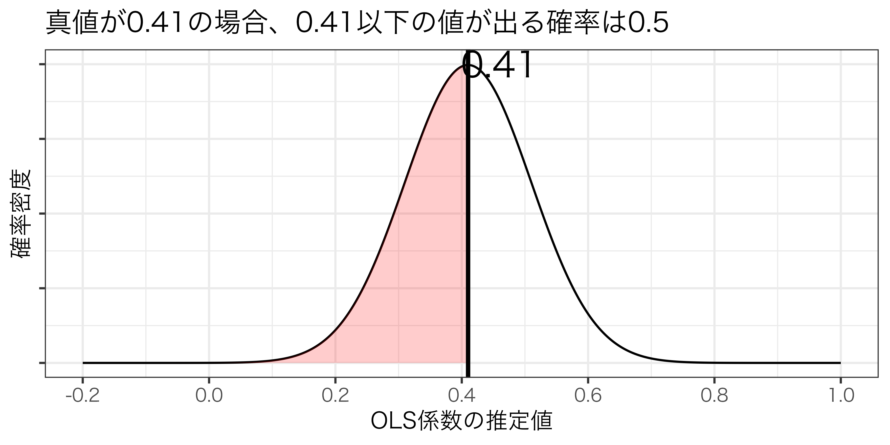
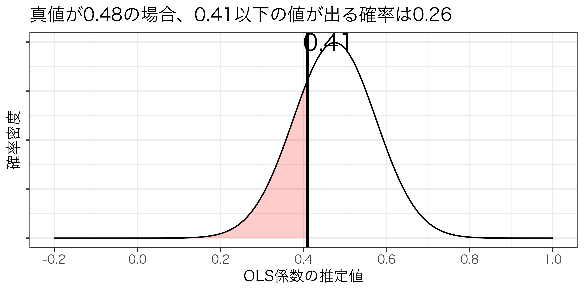
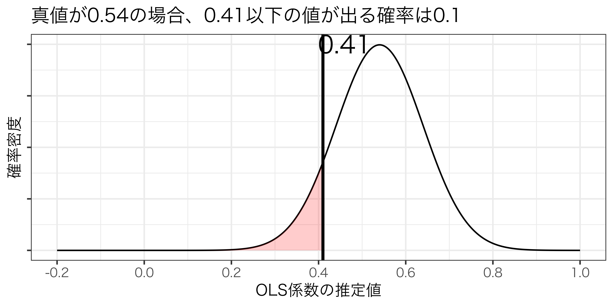
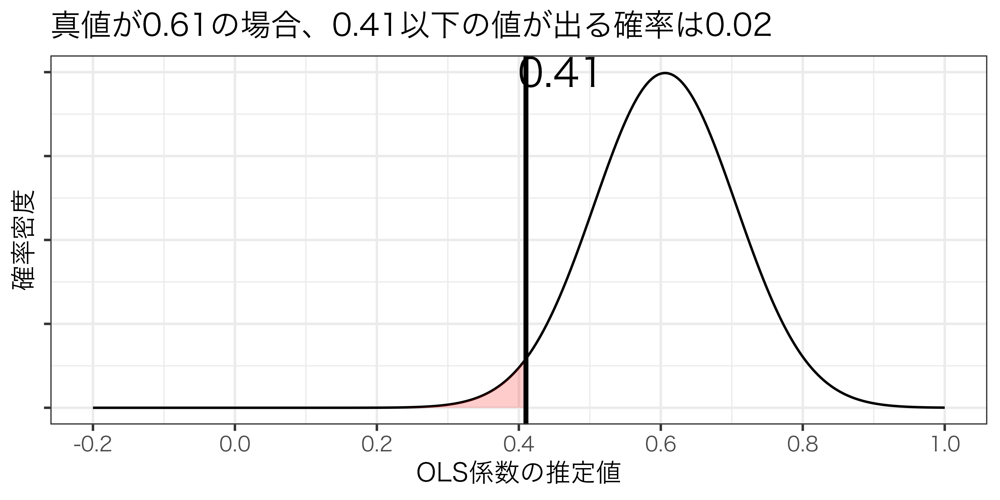
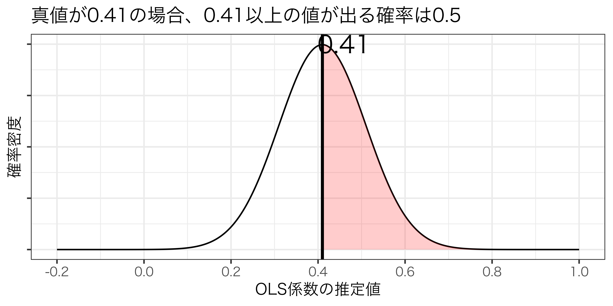
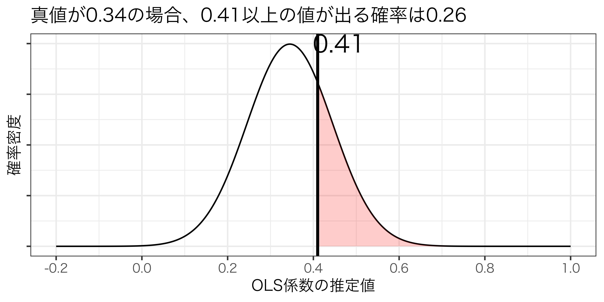
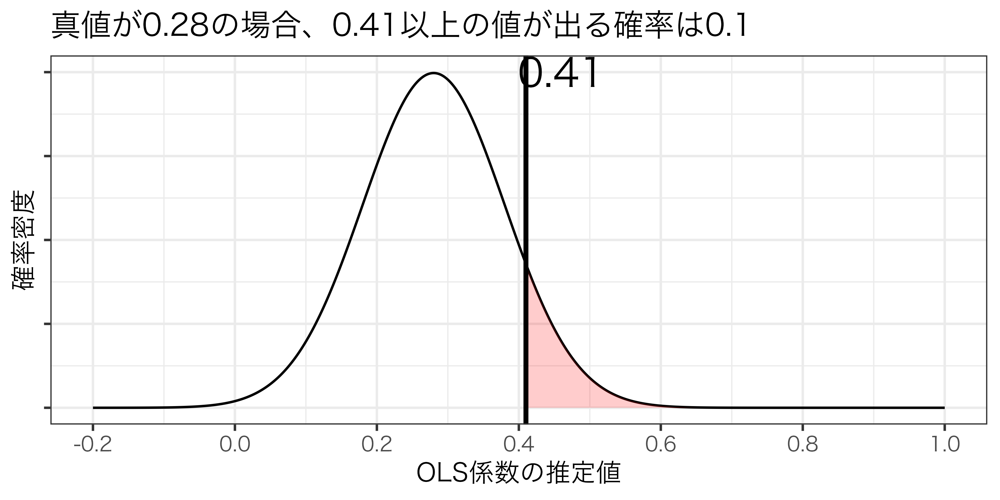
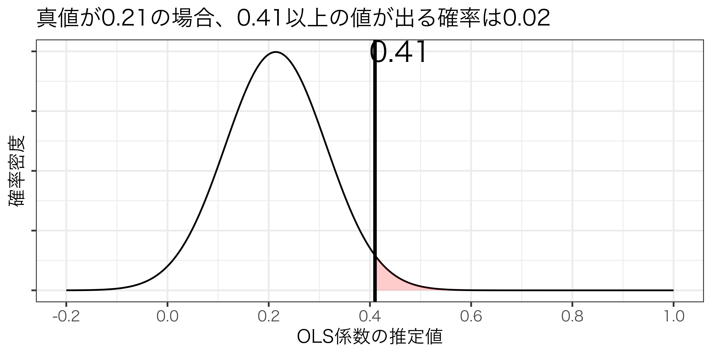
→真の値は0.21〜0.61の範囲内にあると考えると無理がない
信頼区間の計算
有意水準を\(\alpha\)としたとき、\(1-\alpha\)信頼水準における信頼区間は一般的に以下で計算
\[ \hat\beta_{1} \pm \operatorname{t臨界値}\times \operatorname{se}(\hat\beta_{1}) \]
- 90%水準：\(\hat\beta_{1} \pm 1.64\times \operatorname{se}(\hat\beta_{1})\)
- 95%水準：\(\hat\beta_{1} \pm 1.96\times \operatorname{se}(\hat\beta_{1})\)
- 99%水準：\(\hat\beta_{1} \pm 2.58\times \operatorname{se}(\hat\beta_{1})\)
信頼区間と仮説検定
- 0を跨いでいない→統計的に有意
- 0を跨いでいる→統計的に有意でない
クイズ
大統領の分析結果では、所得の変化の係数は\(\hat\beta_{1}=2.2\)で標準誤差は\(\operatorname{se}(\hat\beta_{1})=0.55\)でした。この係数の95%信頼区間の下限／上限の組み合わせとして正しいは以下のどれでしょうか。
| 下限 | 上限 |
|---|---|
| 0.781 | 3.102 |
| 1.122 | 3.278 |
| 3.619 | 3.619 |
仮説検定の限界
仮説検定の注意点
仮説検定を行う際は以下の点に注意
- 内生性がある場合
- 有意と有意でないことの境目
- 有意な結果の間の差
- 統計的有意≠実質的効果
内生性
内生性がある場合、仮説検定の結果は信頼できない
- 独立変数と誤差項に正の相関がある場合
- 係数\(\hat{\beta}_{1}\)は真値よりも過大に推定される
- 真の係数が0であっても、帰無仮説が棄却される可能性がある → 第1種の過誤
- 独立変数と誤差項に負の相関がある場合
- 係数\(\hat{\beta}_{1}\)は真値よりも過小に推定される
- 真の係数が正であっても、帰無仮説が棄却されない可能性がある → 第2種の過誤
断定的すぎる仮説検定
仮説検定は断定的すぎるために以下のような問題が発生
- 有意な結果と有意でない結果の境目がしばしば反直感的
- \(t\)値1.95の係数は有意でない
- \(t\)値1.97の係数は有意
- 有意な結果同士の差も無視される
- \(t\)値2の係数と10の係数は両方有意
- 証拠の強さとして同等か？
統計的有意≠実質的効果
統計的有意であることは実質的効果があることを意味しない
- 例：ドーナツと体重
- 300万人のデータを分析したところ、\(\hat{\beta}_{1}=0.04\)で標準誤差は\(0.001\)
- 統計的には有意（\(t\)値は\(0.04/0.001=40\)→\(p\)値はほぼ0）
- サンプルサイズが極めて大きいことで標準誤差が小さい
- ドーナツ一個食べるごとに体重が0.04増えるからと言って効果があると言って良いか？
まとめ
本日の目的と到達目標
目的
統計的仮説検定について深掘りする。まず仮説検定の枠組みを復習した後、検出力という概念を紹介し、その重要性や第1種／第2種との過誤との関係を議論する。次に、仮説検定から派生した信頼区間という概念を紹介し、実際の分析結果から信頼区間を計算してみる。さらに仮説検定の枠組みの限界を議論する。
到達目標
- 検出力とは何かを説明できる。
- 真の値とサンプルサイズが検出力にどのような影響を与えるのかを説明できる。
- 信頼区間とは何かを説明できる。
- 実際の分析結果から信頼区間を計算できる。
- 仮説検定の4つの限界を説明できる。
次回までに
事後学習
- 授業資料を見直し、目標到達をセルフチェック
- WebClass上での確認小テスト（金曜日まで）
事前学習
- 教科書（第4章全て）を再読する。
来週はオンラインの実習回です。PCから参加してください。
統計的仮説検定：発展編